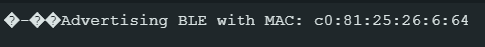

I am a new graduate from Cornell University, having double majored in Computer Science and Mechanical Engineering.
I have been involved in a variety of projects, with interest in robotics (Cornell CUP robotics, Fast Robots project,
Big Red Make-a-thon) and some environmental science (senior design project, Cornell University Project Greenhouse, Cape Henlopen
State Park Internship). This portfolio chronicles several of these technical projects. This portfolio is also a bit or a
mini-project itself! No templates or bootstrap/ similar assistive tools were used in its creation: only HTML, CSS, and JavaScript.
Contact Information
bah253@cornell.edu
Cornell University Senior Design Project
Traffic Tracking Using Object Detection
Project Overview and Purpose
For this project Cornell University partnered with a local environmental justice group "Blueprint Geneva." Blueprint
Geneva addresses a variety of environmental concerns including general air quality, landfill pollution
(a landfill is located in Geneva), and traffic pollution. The environmental group was not satisfied with their current
method of traffic tracking, which requested high school volunteers to manually count the cars. Drawbacks of
this method include a lack of data at times when high schoolers are not available (most of the school day everyday
and most of the night) and human error in count totals and traffic type classification. Therefore, Blueprint Geneva
requested a device that would track traffic. The students involved designed and tested a system
that would use object detection/ computer vision to identify the cars and use LoRaWAN data transmission to send the data
back for the environmental group to analyze.
The team first attempted to use a Raspberry Pi Zero 2 W. This has 512 MB of RAM, while the object detection algorithm
needs ~450 MB of available RAM without including RAM needed for the photo storage itself (each photo frame takes
10-15 MB of storage). This resulted in limited performance from the Zero W 2 during initial tests. The Pi would freeze
for long periods of time (not ideal for a real-time object detection use case) or crash and need to be rebooted (not ideal
for almost ~any~ use case).
A raspberry Pi Zero W 2
A raspberry Pi 4B
The team then switched to a Raspberry Pi 4B, which has 8 GB of RAM. (While some Pi 4s have different storage amounts and
this could be somewhat overkill, this was the only Pi available to the team with sufficient memory). This allowed the
object detection algorithm to run without pushing its memory limits.
Arducam Camera and Lens
Our chosen camera: the Arducam for Raspberry Pi HQ Camera Module, 12.3MP IMX477 has adjustable focus and zoom (8-50mm)
since the community partner has indicated that they intend for
the unit to be used in multiple locations. The main drawback of this method is that the camera video feed
can only be seen while the device is attached to a computer monitor, which means initial setup will require a
computer monitor onsite. This is an inconvenient and awkward setup, but this is only required for the first use.
AdaFruit Feather M0 Board with LoRaWAN
The community partner specified that the device may be used in areas without WiFi; however, the greater Ithaca and
Geneva area have LoRaWAN coverage. Therefore, the AdaFruit Feather M0 board with RFM95 LoRaWAN data transmission
was chosen to transmit the data back to the community partner. Additionally, the board had been used by all team members
involved in the project in a series of training labs. The team used The Things Network (TTN) to upload the data
from the board to the dashboard. Each packet included 13 vehicle ids, and the number of vehicles detected with each id.
For example, sensing one car (vehicle id 0) would result in a packet like this:
{vehicle id 0: 1, vehicle id 1: 0, . . . vehicle id 12: 0}.
The diagram below demonstrates a successful transmission test of a LoRaWAN packet:
AC-DC Buck Converter
North American power outlets provide 120V of power, which far exceeds the 5V needed for this device. 5V is necessary since this
is standard for the Rasperry Pi being used. Therefore, the Digikey RS-15-5 converter fit the project's needs. The buck converter
has live, neutral, and ground ports for connetion to the powerline through an AC power cord.
Enclosure and Push Switch
The enclosure for the device was chosen to be a waterproof enclosure, since the community partner indicated that they would like
to use the device outdoors. This makes sense in order to capture traffic patterns on roads which are outdoors.
The enclosure has a clear front panel, which allows the camera to see through it. The push switch
was chosen to be a waterproof push switch. It is connected in series with the line or
neutral inputs to the buck converter. A small hole was drilled in the enslosure so that the switch is accessible
from the outside of the box.
When training the original object detection model, the team used the most updated version (Yolo v11). This would not run at all on
the raspberry pi, so the team attempted to revert to an older version. Upon using the less computationally expensive Yolo v5,
the dependencies were not compatable with current OpenCV commands. Therefore, the team used Yolo v8 to train the object detection model.
Version 8 would run on the raspberry pi and was compatable with the OpenCV commands.
Raspberry Pi Compatability with OpenCV
OpenCV was used for analysing the images taken on the pi camera. However, the raspberry pi operating system used was Bookworm
(the most updated available Rasberry Pi OS). Bookworm uses a camera module called libcamera, while the older OS Bullseye
uses the Legacy Camera Module. OpenCV is compatable with the older raspberry pi OS Bullseye/ the Legacy Camera Module,
but not with the more recent OS Bookworm/ libcamera. The original code included the simple command "ret, frame = cap.read()"
or "cv2.videoCapture(camera_number)"to
capture a frame and feed the frame
variable into OpenCV functions. This command uses the legacy camera module.
The solution to this incompatability was to create a function that would use libcamera to capture the frame and then convert
the libcamera frame into a format comaptable with OpenCV. The function created is shown below.
Additionally, a flag was put in this code incase future student groups in contact with Blueprint Geneva continue working on the device.
For ease of use with any camera module, the flag "new_rasos" can be set to 1 (to use the new function) or 0 for use with the
Legacy Camera Module. If an older raspberry pi or another computing device instead of a pi is used, the code can still function.
Project Overview
This project was made under professor guidance for a class titled "Fast Robots." These labs, unlike the other projects, are not group
projects. The labs from this class have been included.
The technical skills highlighted in this lab include: soldering skills and electronics integration (labs 3-4), PID implementation (labs 5-6),
kalman filtering (lab 7), and localization (lab 9-11).
Lab1
Prelab : Setup
It was necessary to first download the Arduino IDE (ver. 2.3.4)
and Artemis Nano board extension. A virtual environment was also created for editing files in python and
JupyterNotebook in order to send and recieve messages from the board with Bluetooth Low Energy (BLE). Then the Lab1A tasks
and scripts were run to verify that the communication between devices worked without bluetooth and that the Artemis board was
functioning properly. Then Lab 1B involved the virtual environment, which was used with more given and modified scripts focused on
bluetooth use. Before working on lab tasks and working with the bluetooth, the MAC adress from the Artemis boad was:

The UUID (Universally Unique Identifier) was generated as well to avoid confusion with other boards in the room. The following block
includes the input lines and output (ie the generated UID).
Prelab : Codebase
The connection between the Artemis and laptop was established using bluetooth. In a bluetooth
connection, there is a peripheral device and central device (the peripheral device stores the services and the central device
views the services and gets data from the peripheral). The Artemis board is the peripheral device and the laptop is the central
device.
Lab 1A Tasks
Configuration
The BAUD rate in all given example scripts and the serial montor was reset to 115200 so that the
computer could communicate with the board consistently for all scripts.
Task 1
Running the example script blink to make the LED blink was successful.
Task 2
Running the example script Example4_Serial to make the Serial Monitor echo inputs was successful.
Task 3
Running the example script Example2_analogRead to make the Serial Monitor display the thermistor output
was successful. The temperature reading goes from approx. 33600 to aprox. 33800 while being held to increase the temperature
with body heat.
Task 4
Running the example script Example1_MicrophoneOutput was successful. The intent was to read the output of
the microphone sensor (high numbers for loud sounds, low numbers when there is little/no microphone input or abmient sound).
The output increases from a few hundred to 21,000 after snapping in front of the board, demonstrating that this device works..